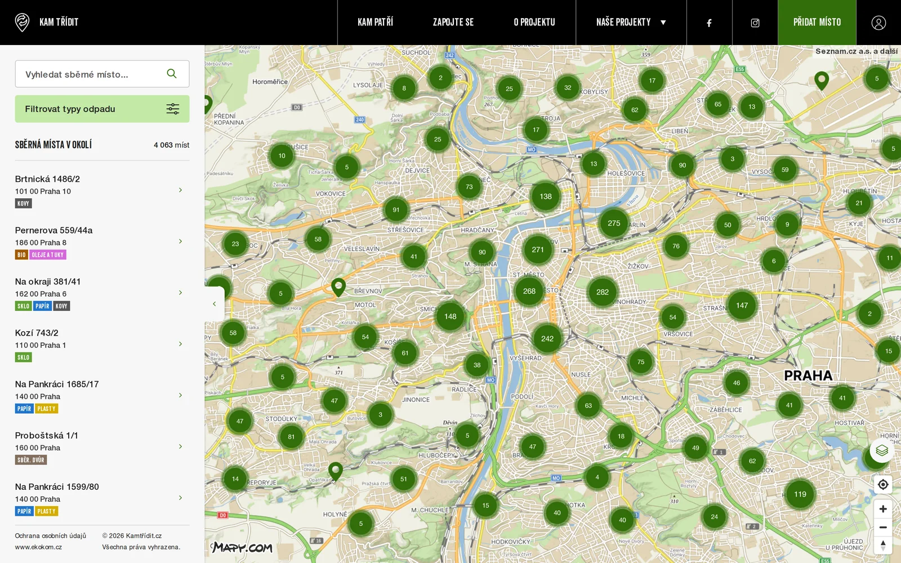
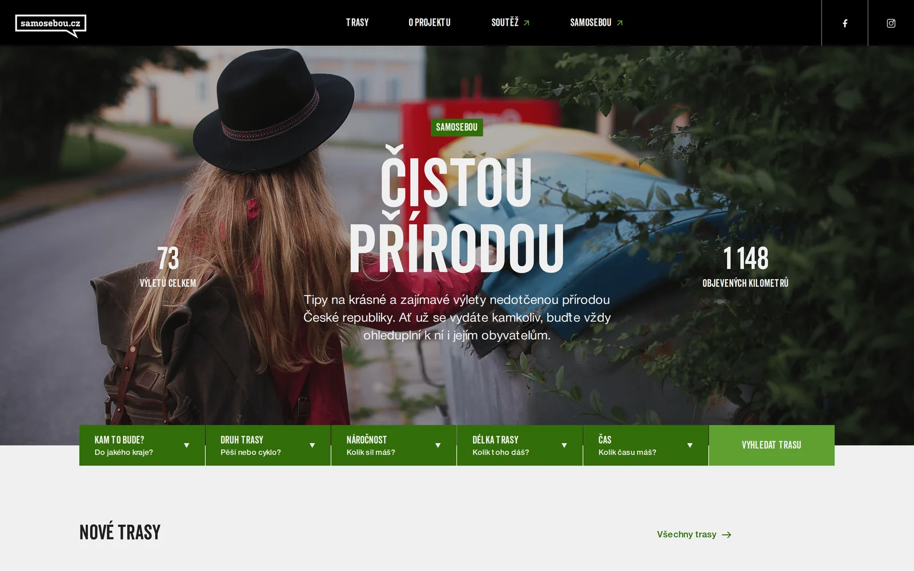
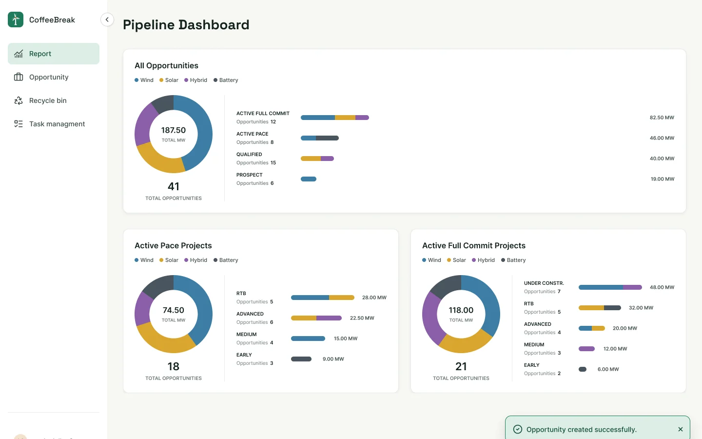
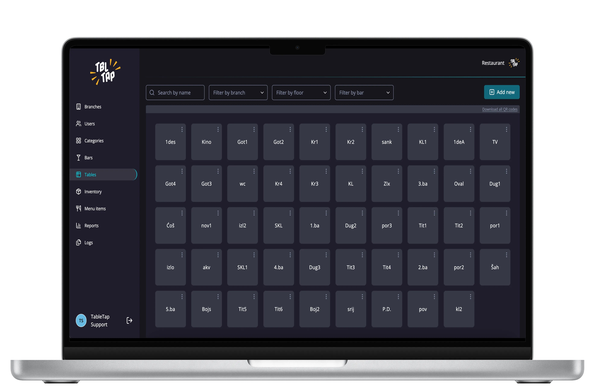
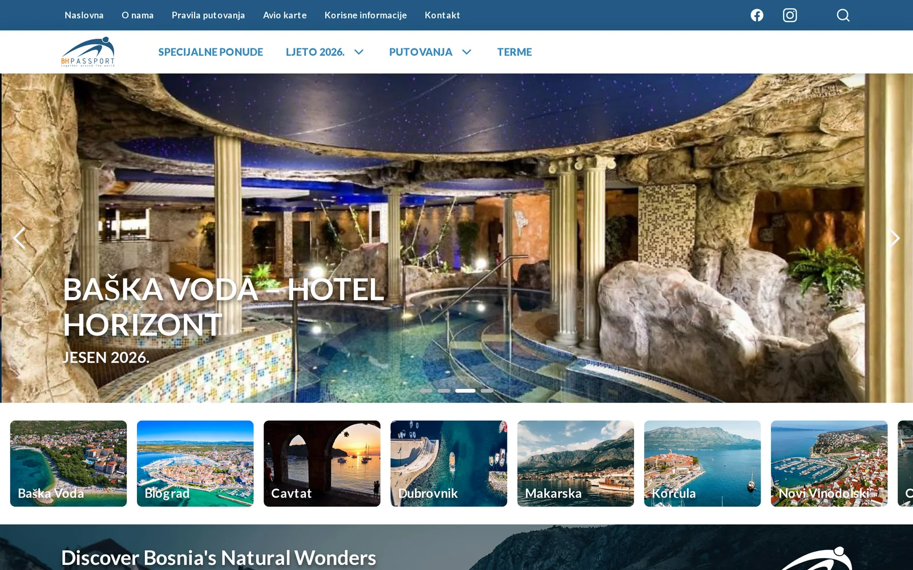

Run 01
Kamtřídit
A nationwide recycling map for Czechia. I rebuilt it so 33,000+ collection points load fast: only the visible area loads, clusters split on click, and the list is virtualized.

Senior Frontend Engineer · Remote · EU work authorization · CET
Working across design, frontend and AI, including the AI features and backend work a product needs.
A nationwide recycling map for Czechia. I rebuilt it so 33,000+ collection points load fast: only the visible area loads, clusters split on click, and the list is virtualized.


A complete redesign of the national hiking and cycling guide: 73 routes, GPX ingestion and interactive waypoints. ~12,000 weekly visitors in season.

Redesigned in Figma and built, plus the new TypeScript backend.

AI menu import from a photo, admin panel, analytics and the landing site.

Next.js and Sanity CMS, rebuilt from WordPress. Lighthouse 97.
Off-piste
I’ve spent five years as the only frontend engineer on most of my projects, so I’m used to owning everything from architecture to the last pixel. Lately that has grown into design and backend work too.
Away from the keyboard I’m snowboarding or on a mountain bike, and at home there’s usually a game on the PS5. Also a big Attack on Titan fan.